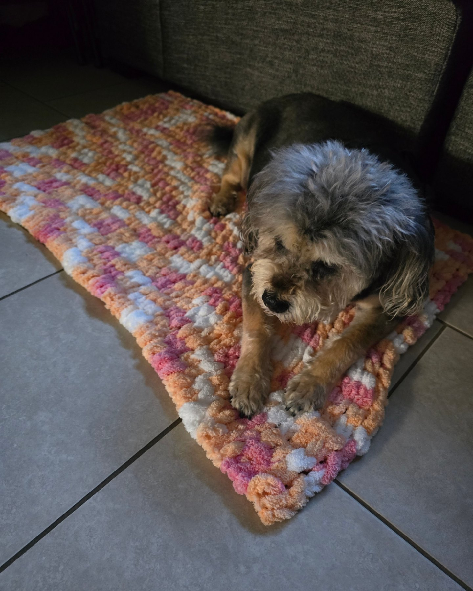
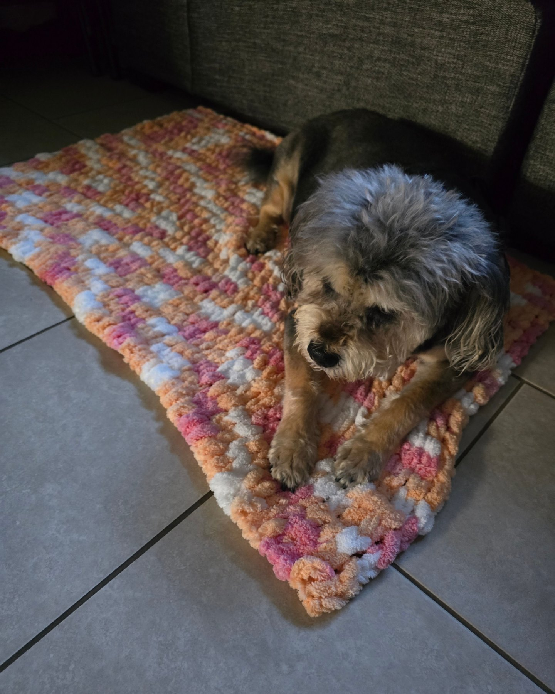
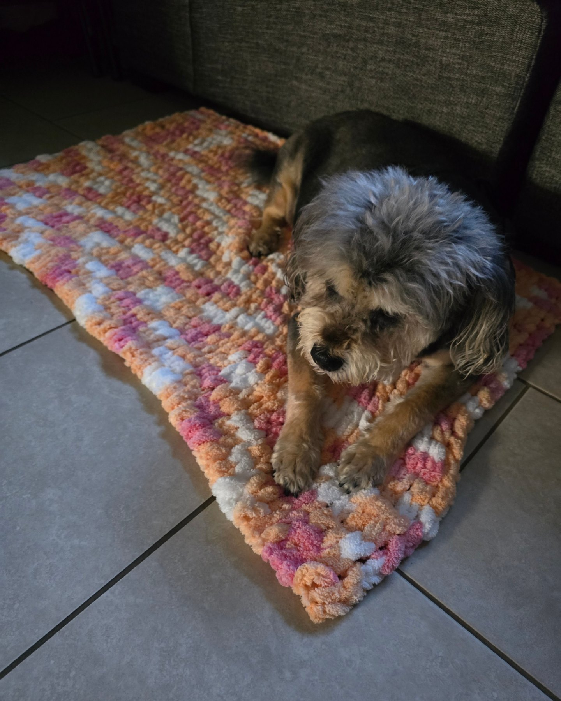

Hi, my name is Maya. I am 24 years old and this my personal website. This is mainly for all my hobbies to showcase my talents. Even this website is to showcase my talents. I just want to showcase my certifications and things I have been doing to practice my skills.
Took this to get a clean understanding of UI design Principles, here are some pics below:
Took this to practice my skills in HTML and CSS
Took this to further some business knowledge

So, these are just some things that I have made recently but I decided to showcase them here. I am currently stuck, in what feels like a dead end. Like I said on the main page, I am trying to combine my two main hobbies. Honestly, these two things are keeping me sane. I am hoping that things would lead to somewhere such as a career. I am honestly ready to leave the automotive industry and I am hoping to break into something that follows my degree.
Speaking of my degree, I graduated from Columbia College Chicago in May of 2023. I received my Bachelor's Degree in Game Art but I found a love of programming while there. I took a lot of classes that followed may different languages such as C#, C, C++, JavaScript, HTML, and CSS. I still take a lot of care and I am very proud of my drawings but I started getting into different means of self expression through other creative prowesses. Creating things brings me a lot of joy and this shows my main personality without having to actually talk.
Email: mkhunter02@gmail.com | My Github | My Store